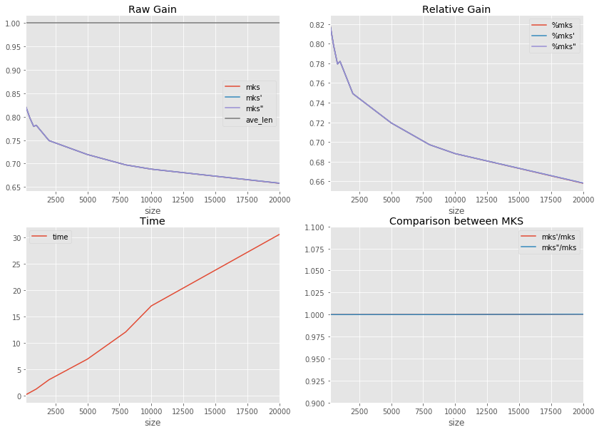
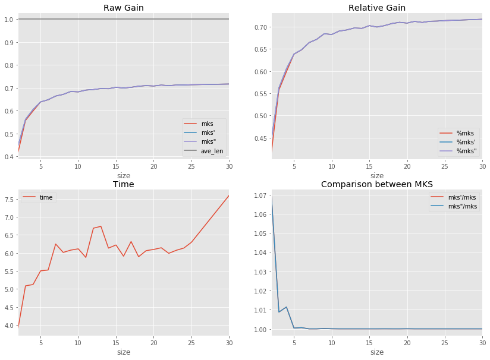
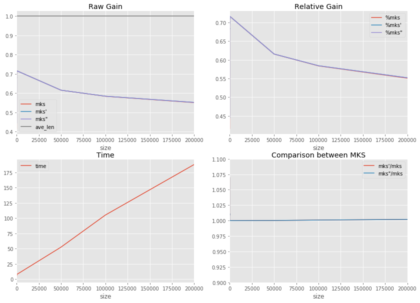

Completion Trie and metrics#
Evaluation of a completion system on wikpedia pages.
[1]:
%matplotlib inline
import matplotlib.pyplot as plt
plt.style.use("ggplot")
from jyquickhelper import add_notebook_menu
add_notebook_menu()
[1]:
Wikipedia titles, uniform#
[2]:
from mlstatpy.data.wikipedia import download_titles
file_titles = download_titles(country="fr")
[3]:
from mlstatpy.data.wikipedia import enumerate_titles
list_titles = list(
sorted(set(_ for _ in enumerate_titles(file_titles) if "A" <= _[0] <= "Z"))
)
[4]:
len(list_titles), list_titles[:5], list_titles[1000000:1000005]
[4]:
(3108490,
['A',
'A & A',
'A (Airport Express)',
'A (Ayumi Hamasaki)',
"A (Disque d'Ayumi Hamasaki)"],
['Fantasy in the sky',
'Fantasy mythique',
'Fantasy of manners',
'Fantasy tennis',
'Fantasy urbaine'])
[5]:
from mlstatpy.nlp.completion import CompletionTrieNode
def gain_dynamique_moyen_par_mot(queries, weights):
per = list(zip(weights, queries))
total = sum(w * len(q) for q, w in zip(queries, weights))
res = []
trie = CompletionTrieNode.build([(None, q) for _, q in per])
trie.precompute_stat()
trie.update_stat_dynamic()
wks = [(w, p, len(w) - trie.min_keystroke0(w)[0]) for p, w in per]
wks_dyn = [(w, p, len(w) - trie.min_dynamic_keystroke(w)[0]) for p, w in per]
wks_dyn2 = [(w, p, len(w) - trie.min_dynamic_keystroke2(w)[0]) for p, w in per]
gain = sum(g * p / total for w, p, g in wks)
gain_dyn = sum(g * p / total for w, p, g in wks_dyn)
gain_dyn2 = sum(g * p / total for w, p, g in wks_dyn2)
ave_length = sum(len(w) * p / total for p, w in per)
return gain, gain_dyn, gain_dyn2, ave_length
[6]:
import time, random, pandas
def benchmark(sizes):
print("time", 0)
allres = []
for size in sizes:
begin = time.perf_counter()
if size is None:
size = len(list_titles)
spl = list_titles
else:
spl = random.sample(list_titles, size)
spl.sort()
res = gain_dynamique_moyen_par_mot(spl, [1.0] * len(spl))
dt = time.perf_counter() - begin
print(
"time: {0}s - nb={1}".format(dt, len(spl)),
"gain",
tuple(_ / res[-1] for _ in res),
)
allres.append((size, dt) + res)
# with open("sample%d.txt" % len(spl), "w", encoding="utf-8") as f:
# f.write("\n".join(spl))
df = pandas.DataFrame(allres, columns="size time mks mks' mks\" ave_len".split())
for c in "mks mks' mks\"".split():
df["%" + c] = df[c] / df["ave_len"]
df[c + "/mks"] = df[c] / df["mks"]
return df
df = benchmark([200, 500, 800, 1000, 2000, 5000, 8000, 10000, 20000])
df.tail(n=2)
time 0
time: 0.21504800644533353s - nb=200 gain (0.820872274143302, 0.820872274143302, 0.820872274143302, 1.0)
time: 0.6058446756721159s - nb=500 gain (0.7976588628762532, 0.7976588628762532, 0.7976588628762532, 1.0)
time: 1.009366944402156s - nb=800 gain (0.779308535065277, 0.779308535065277, 0.779308535065277, 1.0)
time: 1.2731077523609795s - nb=1000 gain (0.7819106501794998, 0.7819106501794998, 0.7819106501794998, 1.0)
time: 3.0382918326608044s - nb=2000 gain (0.7491075326810025, 0.7491075326810025, 0.7491075326810025, 1.0)
time: 6.941259884811901s - nb=5000 gain (0.7193327903836085, 0.7193534087277493, 0.7193534087277493, 1.0)
time: 12.096078319013222s - nb=8000 gain (0.6971821041145199, 0.6971821041145199, 0.6971821041145199, 1.0)
time: 17.030497306746902s - nb=10000 gain (0.6881011563817098, 0.6881371807341721, 0.6881371807341721, 1.0)
time: 30.55692095058407s - nb=20000 gain (0.6579791591697565, 0.6582343738435791, 0.6582343738435791, 1.0)
[6]:
| size | time | mks | mks' | mks" | ave_len | %mks | mks/mks | %mks' | mks'/mks | %mks" | mks"/mks | |
|---|---|---|---|---|---|---|---|---|---|---|---|---|
| 7 | 10000 | 17.030497 | 0.688101 | 0.688137 | 0.688137 | 1.0 | 0.688101 | 1.0 | 0.688137 | 1.000052 | 0.688137 | 1.000052 |
| 8 | 20000 | 30.556921 | 0.657979 | 0.658234 | 0.658234 | 1.0 | 0.657979 | 1.0 | 0.658234 | 1.000388 | 0.658234 | 1.000388 |
[7]:
import matplotlib.pyplot as plt
f, ax = plt.subplots(2, 2, figsize=(14, 10))
df.plot(x="size", y="time", ax=ax[1, 0])
df.plot(x="size", y=["mks", "mks'", 'mks"', "ave_len"], ax=ax[0, 0])
df.plot(x="size", y=["%mks", "%mks'", '%mks"'], ax=ax[0, 1])
df.plot(x="size", y=["mks'/mks", 'mks"/mks'], ax=ax[1, 1])
ax[0, 0].legend()
ax[0, 1].legend()
ax[1, 0].legend()
ax[1, 1].legend()
ax[1, 1].set_ylim([0.9, 1.1])
ax[0, 0].set_title("Raw Gain")
ax[0, 1].set_title("Relative Gain")
ax[1, 0].set_title("Time")
ax[1, 1].set_title("Comparison between MKS")
[7]:
<matplotlib.text.Text at 0x15a756202b0>

Reduce the alphabet size#
[8]:
from mlstatpy.data.wikipedia import enumerate_titles
list_titles = list(
sorted(set(_ for _ in enumerate_titles(file_titles) if "A" <= _[0] <= "Z"))
)
[9]:
import time, random, pandas
def char_modulo(c, size):
if len(c) != 1:
raise Exception("unexpected size '%s'" % c)
# if len(c) != len(c.lower()):
# raise Exception("unexpected lower size '%s' != '%s' (%d != %d)" % (c, c.lower(), len(c), len(c.lower())))
if size is None:
return c
else:
cl = c.lower()
if len(cl) > len(c):
cl = c
o = ord(cl)
a = 97
d = (o - a) + size * 10
return chr(97 + (d % size))
def reduce_alphabet(sample, size):
return ["".join(char_modulo(c, size) for c in word) for word in sample]
def benchmark_size(size, alphabet_sizes):
if size is None:
size = len(list_titles)
sample = list_titles
else:
sample = random.sample(list_titles, size)
print("time", 0)
allres = []
for size in alphabet_sizes:
begin = time.perf_counter()
spl = reduce_alphabet(sample, size)
spl = list(sorted(set(spl)))
res = gain_dynamique_moyen_par_mot(spl, [1.0] * len(spl))
dt = time.perf_counter() - begin
print(
"time: {0}s - nb={1}".format(dt, len(spl)),
"gain",
tuple(_ / res[-1] for _ in res),
)
if size is None:
size = max(_ for _ in alphabet_sizes if _ is not None) + 5
allres.append((size, dt) + res)
# with open("sample%d.txt" % len(spl), "w", encoding="utf-8") as f:
# f.write("\n".join(spl))
df = pandas.DataFrame(allres, columns="size time mks mks' mks\" ave_len".split())
for c in "mks mks' mks\"".split():
df["%" + c] = df[c] / df["ave_len"]
df[c + "/mks"] = df[c] / df["mks"]
return df
df = benchmark_size(5000, [None] + list(range(2, 26)))
df.tail(n=2)
time 0
time: 7.59344921135289s - nb=5000 gain (0.716585290640898, 0.716585290640898, 0.716585290640898, 1.0)
time: 3.8923985946166795s - nb=4581 gain (0.41594360086768417, 0.4448874994683378, 0.4448874994683378, 1.0)
time: 5.085379287694195s - nb=4942 gain (0.5571683533987387, 0.5620376961406324, 0.5620376961406324, 1.0)
time: 5.121866923020207s - nb=4974 gain (0.5983975448244626, 0.6052151883090817, 0.6052151883090817, 1.0)
time: 5.501076360438674s - nb=4991 gain (0.6380275314306908, 0.6382847383691052, 0.6382847383691052, 1.0)
time: 5.524899975880544s - nb=4988 gain (0.6475382003395598, 0.6479497864896859, 0.6479497864896859, 1.0)
time: 6.245833967660474s - nb=4997 gain (0.6639308855291576, 0.6639308855291576, 0.6639308855291576, 1.0)
time: 6.012760238038936s - nb=4997 gain (0.6712028636672216, 0.6712028636672216, 0.6712028636672216, 1.0)
time: 6.076252674864918s - nb=4997 gain (0.6838256469329845, 0.6839490681696653, 0.6839490681696653, 1.0)
time: 6.111897439143831s - nb=4999 gain (0.6822851853756178, 0.6823160384634976, 0.6823160384634976, 1.0)
time: 5.873518026578495s - nb=4997 gain (0.6900718921309502, 0.6900718921309502, 0.6900718921309502, 1.0)
time: 6.684070891827105s - nb=4999 gain (0.6925798323648767, 0.6925798323648767, 0.6925798323648767, 1.0)
time: 6.735858496876062s - nb=4997 gain (0.6969017445687994, 0.6969017445687994, 0.6969017445687994, 1.0)
time: 6.131690155300021s - nb=4999 gain (0.6960868000205542, 0.6960868000205542, 0.6960868000205542, 1.0)
time: 6.2186773552921295s - nb=4999 gain (0.7022574175965309, 0.7022574175965309, 0.7022574175965309, 1.0)
time: 5.907541621836572s - nb=4998 gain (0.6991010265166325, 0.6991010265166325, 0.6991010265166325, 1.0)
time: 6.31432889332882s - nb=4999 gain (0.7022368488712789, 0.7022471332339055, 0.7022471332339055, 1.0)
time: 5.892940837380593s - nb=4998 gain (0.7070717459272685, 0.7070717459272685, 0.7070717459272685, 1.0)
time: 6.061792582734597s - nb=4999 gain (0.7097547179513399, 0.7097547179513399, 0.7097547179513399, 1.0)
time: 6.094942944771901s - nb=4999 gain (0.7079858075795616, 0.7080166606674415, 0.7080166606674415, 1.0)
time: 6.141645954818159s - nb=4999 gain (0.7118732966524257, 0.7118732966524257, 0.7118732966524257, 1.0)
time: 5.9873731844709255s - nb=4999 gain (0.7094359027099135, 0.7094359027099135, 0.7094359027099135, 1.0)
time: 6.0718454556808865s - nb=4999 gain (0.7120892682675833, 0.7120892682675833, 0.7120892682675833, 1.0)
time: 6.133951068150054s - nb=4999 gain (0.7124903584100222, 0.7124903584100222, 0.7124903584100222, 1.0)
time: 6.292655432947868s - nb=4999 gain (0.713611353936324, 0.713611353936324, 0.713611353936324, 1.0)
[9]:
| size | time | mks | mks' | mks" | ave_len | %mks | mks/mks | %mks' | mks'/mks | %mks" | mks"/mks | |
|---|---|---|---|---|---|---|---|---|---|---|---|---|
| 23 | 24 | 6.133951 | 0.712490 | 0.712490 | 0.712490 | 1.0 | 0.712490 | 1.0 | 0.712490 | 1.0 | 0.712490 | 1.0 |
| 24 | 25 | 6.292655 | 0.713611 | 0.713611 | 0.713611 | 1.0 | 0.713611 | 1.0 | 0.713611 | 1.0 | 0.713611 | 1.0 |
[10]:
df = df.sort_values("size")
[11]:
import matplotlib.pyplot as plt
f, ax = plt.subplots(2, 2, figsize=(14, 10))
df.plot(x="size", y="time", ax=ax[1, 0])
df.plot(x="size", y=["mks", "mks'", 'mks"', "ave_len"], ax=ax[0, 0])
df.plot(x="size", y=["%mks", "%mks'", '%mks"'], ax=ax[0, 1])
df.plot(x="size", y=["mks'/mks", 'mks"/mks'], ax=ax[1, 1])
ax[0, 0].legend()
ax[0, 1].legend()
ax[1, 0].legend()
ax[1, 1].legend()
# ax[1,1].set_ylim([0.9, 1.1])
ax[0, 0].set_title("Raw Gain")
ax[0, 1].set_title("Relative Gain")
ax[1, 0].set_title("Time")
ax[1, 1].set_title("Comparison between MKS")
[11]:
<matplotlib.text.Text at 0x15a74bf40b8>

Wikipedia titles, uniform, longer test#
[12]:
df2 = benchmark([50000])
df2.tail(n=2)
time 0
time: 52.057980205573585s - nb=50000 gain (0.6162242515637921, 0.616305075104518, 0.616305075104518, 1.0)
[12]:
| size | time | mks | mks' | mks" | ave_len | %mks | mks/mks | %mks' | mks'/mks | %mks" | mks"/mks | |
|---|---|---|---|---|---|---|---|---|---|---|---|---|
| 0 | 50000 | 52.05798 | 0.616224 | 0.616305 | 0.616305 | 1.0 | 0.616224 | 1.0 | 0.616305 | 1.000131 | 0.616305 | 1.000131 |
[13]:
df2 = benchmark(
[50000, 100000, 200000]
) # , 500000, 500000, 1000000, 2000000, None]) too long in python
df2.tail(n=2)
time 0
time: 52.51158252780897s - nb=50000 gain (0.615225173328998, 0.6153599275825006, 0.6153599275825006, 1.0)
time: 105.0721302614229s - nb=100000 gain (0.5836043296652512, 0.5841384772496148, 0.5841384772496148, 1.0)
time: 187.86111486480695s - nb=200000 gain (0.5507786166438062, 0.5518801462043321, 0.5518801462043321, 1.0)
[13]:
| size | time | mks | mks' | mks" | ave_len | %mks | mks/mks | %mks' | mks'/mks | %mks" | mks"/mks | |
|---|---|---|---|---|---|---|---|---|---|---|---|---|
| 1 | 100000 | 105.072130 | 0.583604 | 0.584138 | 0.584138 | 1.0 | 0.583604 | 1.0 | 0.584138 | 1.000915 | 0.584138 | 1.000915 |
| 2 | 200000 | 187.861115 | 0.550779 | 0.551880 | 0.551880 | 1.0 | 0.550779 | 1.0 | 0.551880 | 1.002000 | 0.551880 | 1.002000 |
[14]:
dfall = pandas.concat([df, df2])
f, ax = plt.subplots(2, 2, figsize=(14, 10))
dfall.plot(x="size", y="time", ax=ax[1, 0])
dfall.plot(x="size", y=["mks", "mks'", 'mks"', "ave_len"], ax=ax[0, 0])
dfall.plot(x="size", y=["%mks", "%mks'", '%mks"'], ax=ax[0, 1])
dfall.plot(x="size", y=["mks'/mks", 'mks"/mks'], ax=ax[1, 1])
ax[0, 0].legend()
ax[0, 1].legend()
ax[1, 0].legend()
ax[1, 1].legend()
ax[1, 1].set_ylim([0.9, 1.1])
ax[0, 0].set_title("Raw Gain")
ax[0, 1].set_title("Relative Gain")
ax[1, 0].set_title("Time")
ax[1, 1].set_title("Comparison between MKS")
[14]:
<matplotlib.text.Text at 0x15a132f8be0>

[15]:
[16]: